A focus timer for the Spotify Car Thing, with a shelf of swappable visual designs. Turn the wheel to set the time, press to start, hold to stop.
Switch skins any time from the on-device picker. They share one timer and one history — only the presentation changes.
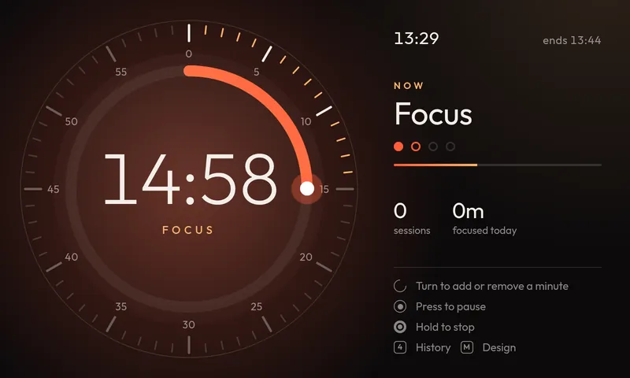
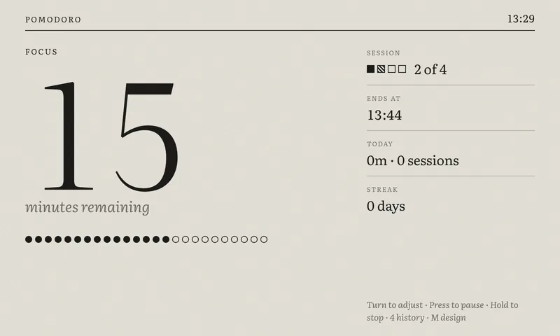
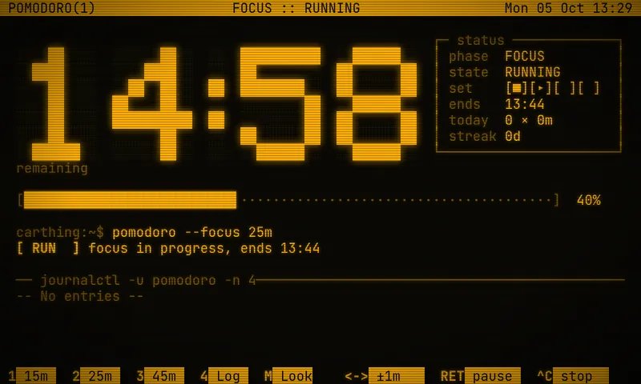
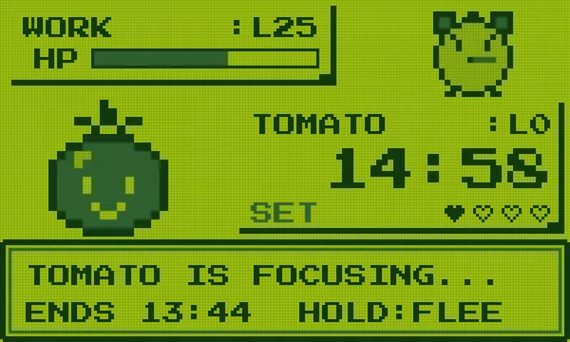
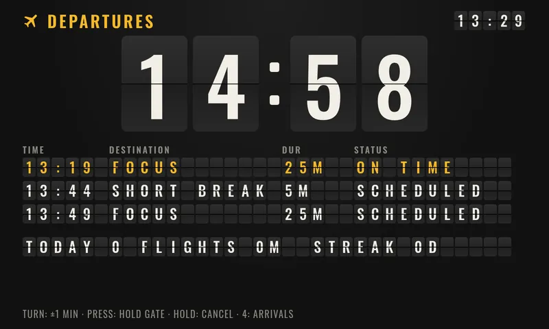
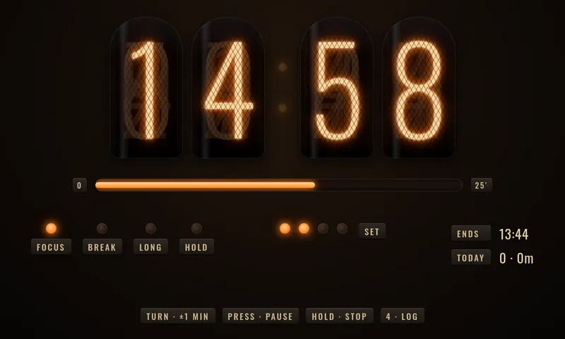
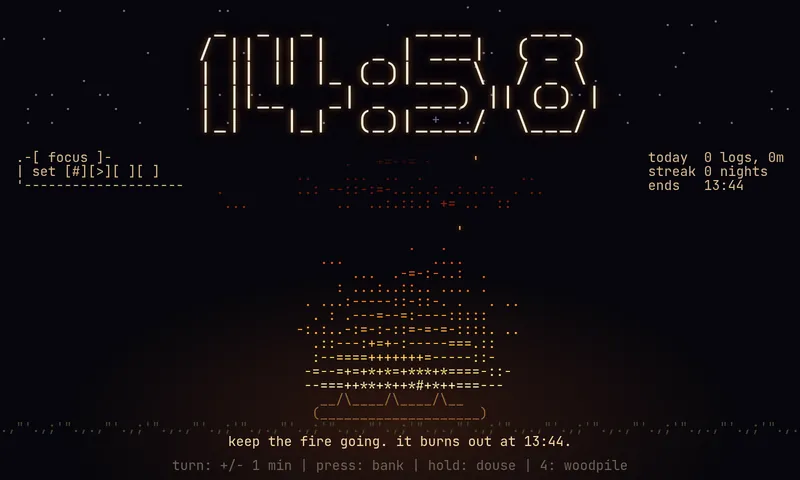
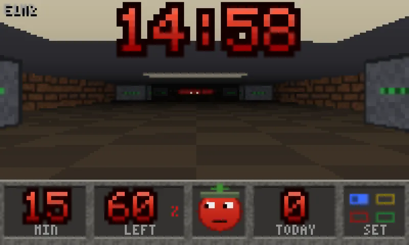
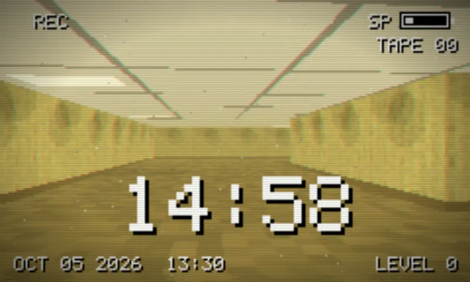
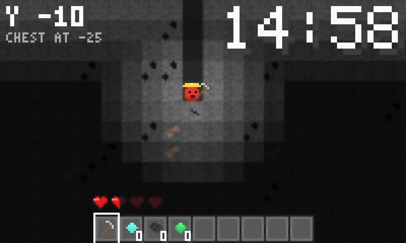
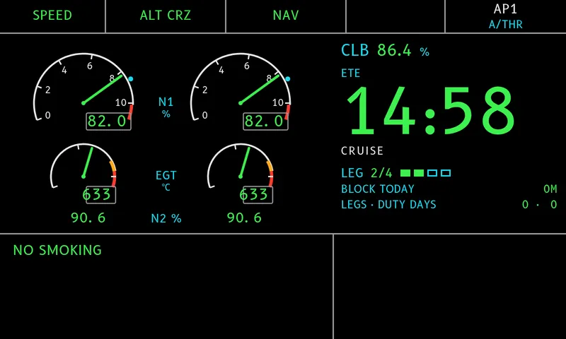
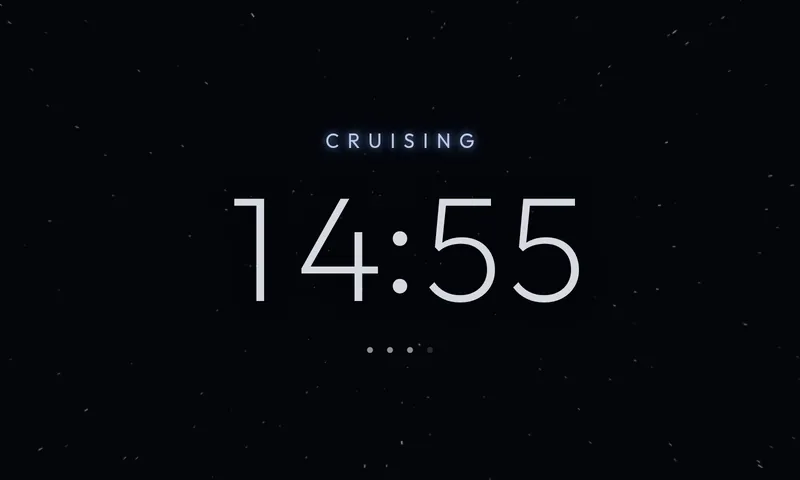
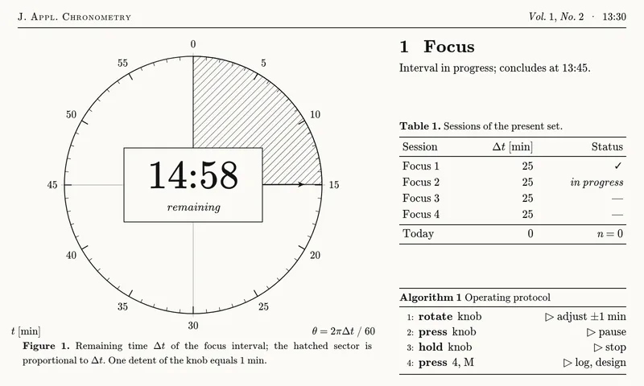
A full Pomodoro cycle on a 5-inch screen you drive with one wheel.
Turn to set the minutes, press to start, pause or resume, hold to stop or skip. Three preset buttons for 15, 25 and 45.
Four focus sessions to a set, short breaks between, a long break at the end. Focus flows into its break; breaks stay exact to the second.
Every session is logged on the device — daily focus totals, the busiest day, and your running streak, a week at a time.
The Car Thing has no battery clock. The app checks it against your phone and the boot id, and warns instead of logging against a wrong time.
From a calm e-ink page to a DOOM corridor to an Airbus cockpit — one timer, many skins, swapped in a tap.
MIT-licensed, built with React and TypeScript. All fonts and dependencies are open.
bridgething turns the discontinued Spotify Car Thing into a programmable device: a daemon serves small web apps and exposes a typed client SDK that a webapp uses to talk to the hardware over a local WebSocket. This project is one such webapp — it uses the daemon's store for persistence, the time surface to check the clock, system diagnostics, capabilities and audio for the completion chime. More at bridgething.com.